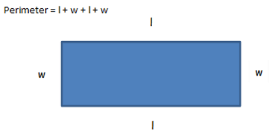
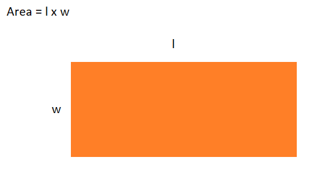
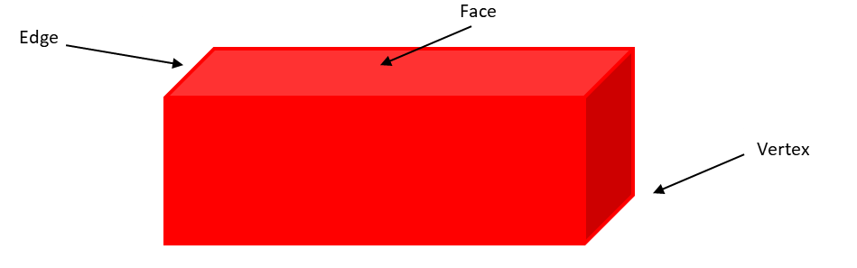
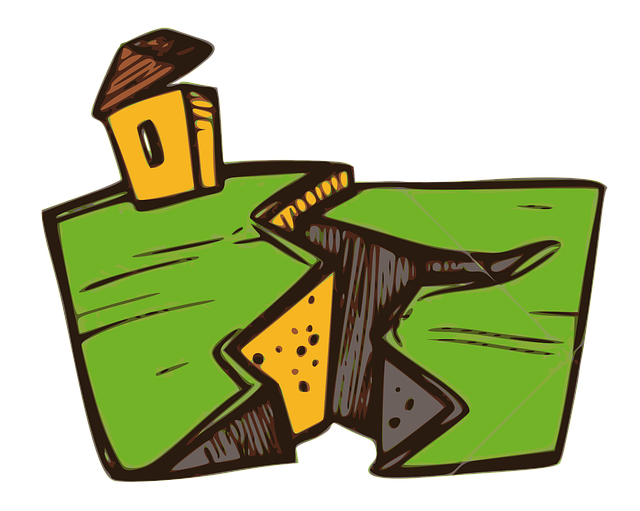

What You Should Know - Goobi: Earthquake Engineering
 Important Vocabulary
Important Vocabulary
- 3D Shapes – a 3D shape is a solid figure that has length, width, and height (examples of 3D shapes include a cube, sphere, rectangular prism, and cylinder)
- Attributes – Shapes can have many attributes, or features (example attributes include sides, angles, vertices, faces, and edges)
- Perimeter – Perimeter is the distance around the edge of a shape
- Area – Area is the amount of space a flat shape covers
- Earthquake – the sudden shaking or rolling of the earth’s surface
Perimeter and Area
Perimeter
Perimeter is the distance around the edge of a shape. Perimeter can be calculated by adding all sides (length and width) of the shape together to find the total. This total is the perimeter of the shape.

Area
Area is the amount of space a flat shape covers. One way to calculate the area is to count the unit cubes found inside a shape. Another way, if it is a rectangle, is to multiply the length of the rectangle by its width.

Attributes of Shapes
Shapes can have many attributes, or features. 3D shapes have a variety of different attributes. The length, width, or height make up the number of edges in a shape. Vertices are another attribute that occur at the point where two sides meet. In a 3D shape, any flat 2D shape that is found within it is called a face.

Earthquake
An earthquake is the sudden shaking or rolling of the earth’s surface. When an earthquake occurs, it feels like the ground is moving. An earthquake typically lasts between 10-30 seconds, but can feel much longer. Some earthquakes are strong, while others are weaker.

How Do Scientists Study Earthquakes?
Scientists that study earthquakes are called seismologists. Seismographs are a tool seismologists and other scientists use to record and capture data during an earthquake. Seismologists also study what causes earthquakes, as well as when and where they might occur.
Engineering Buildings for Earthquakes
Engineers use a variety of techniques when they design buildings to ensure they will remain standing though an earthquake event. Sometimes engineers use flexible or lightweight materials, a solid foundation, or even build the building on rollers to allow it to sway.
Engineers are continuously researching and testing to determine the best methods to help buildings withstand earthquakes.
Career Connection and Real-World Application
Structural Engineer
A structural engineer takes the architect’s design and figures out how to build it. They must know how to make sure the building won’t fall down. They have to know how strong the materials must be and what materials to use to make a building earthquake-proof. The structural engineer works with an architect to make the original design better. For earthquake resistant designs, they must consider the design and materials they are using. They must also look at how to support it when an earthquake occurs.
Seismologist
Text: A seismologist is a scientist who studies earthquakes. They take a look at tectonic plates, tsunamis, and of course, earthquakes. They help to record, study, and learn about earthquakes that have already happened, as well as help prepare for future earthquakes that may occur.